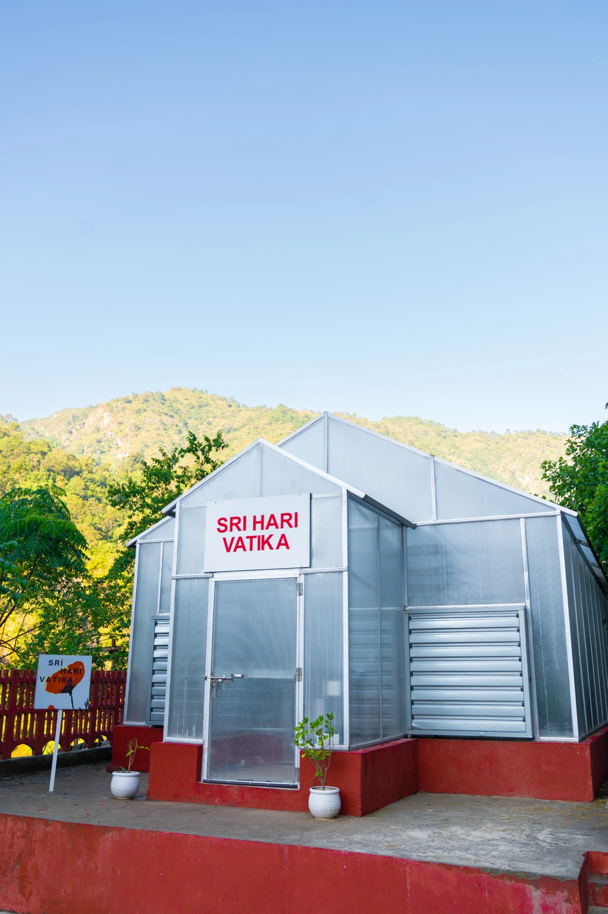

Sri Hari Vatika
In the peaceful surroundings of Sri Badrika Ashram lies Sri Hari Vatika, a sacred garden where flowers are grown with devotion and care. Every bloom is cultivated organically with sunlight, pure water, and loving seva. These flowers are offered daily to Sri Hari Bhagwan, becoming garlands that carry the prayers of every devotee.
The Vatika reflects the ashram’s purity, devotion and sustainability. Every plant is treated as sacred, and devotees are welcome to contribute to its care and upkeep. Offerings made here help this divine garden flourish, where every flower blooms only for Bhagwan.